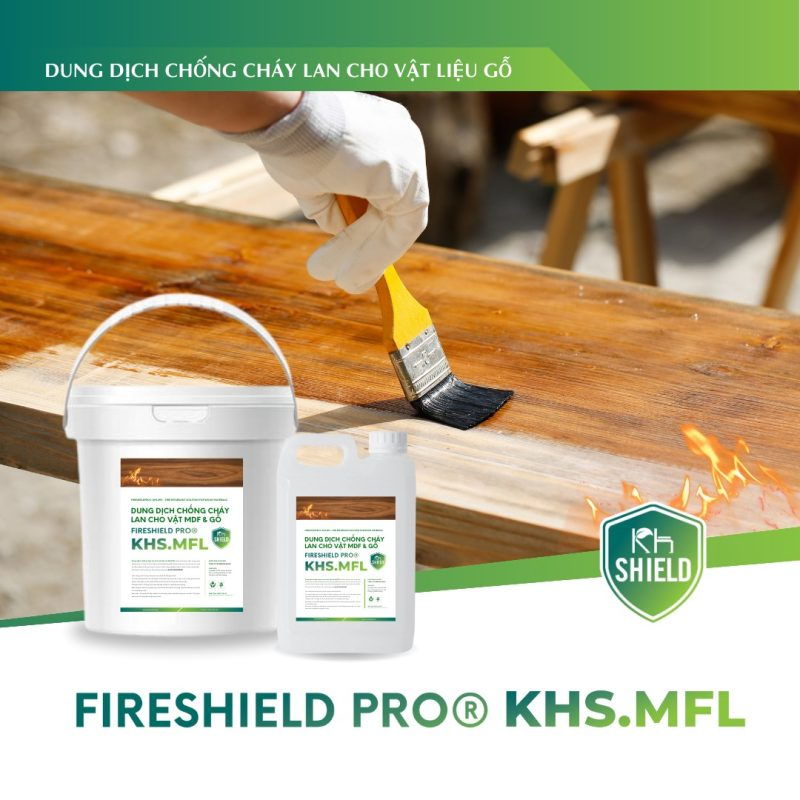
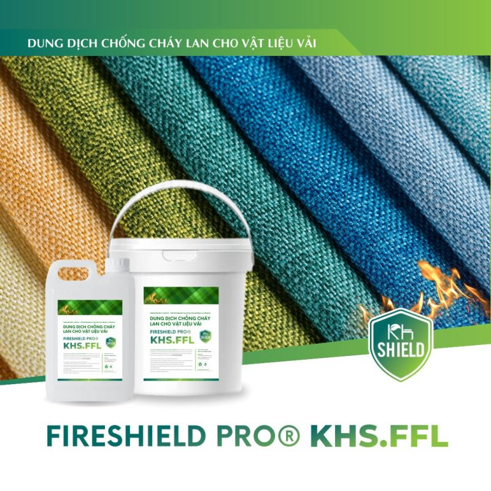

Được xem là giải pháp chống cháy đơn giản, hiệu quả, an toàn và tiết kiệm, dung dịch chống cháy đang là lựa chọn của nhiều người để bảo vệ cho công trình. Với 2 dòng sản phẩm là: dung dịch chống cháy lan cho vật liệu gỗ MDF KHS.MLF và dung dịch chống cháy lan cho vật liệu vải, rèm thảm KHS.FFL cùng với vài thao tác, KH Shield giúp bạn biến vật liệu thường thành vật liệu chống cháy để thoát khỏi mối lo cháy nổ bủa vây.
Dung dịch chống cháy là một loại chất lỏng được sử dụng để làm chậm hoặc ngăn chặn sự lan rộng của lửa hoặc cường độ của nó. Để thực hiện được điều này, dung dịch chống cháy sẽ tạo ra các phản ứng hóa học để làm giảm tốc độ cháy hoặc ngăn chặn quá trình cháy.
Một số dung dịch chống cháy tạo ra một lớp bảo vệ trên bề mặt vật liệu hoặc chất cháy, từ đó ngăn chặn sự tiếp xúc của ngọn lửa với nhiên liệu và khí cháy. Lớp bảo vệ này có thể làm giảm hoặc ngăn chặn sự lan truyền của đám cháy. Ngoài ra, còn có các dung dịch chống cháy có khả năng tạo ra chất khí không cháy, từ đó làm giảm nồng độ oxi xung quanh ngọn lửa.
Dung dịch chống cháy có thể được sử dụng như một biện pháp phòng ngừa khi được sử dụng làm lớp phủ trên bề mặt và đồ nội thất, hoặc chúng có thể được sử dụng trong các hoạt động chữa cháy khi đám cháy bùng phát.
Cơ chế hoạt động của dung dịch chống cháy:
Dung dịch chống cháy được sử dụng rộng rãi trong nhiều lĩnh vực như công nghiệp, xây dựng, ô tô, hàng không, điện tử và nhiều ngành công nghiệp khác để bảo vệ con người, tài sản và môi trường khỏi nguy cơ cháy nổ.
Dung dịch chống cháy được coi là một giải pháp chống cháy đơn giản và hiệu quả trong nhiều trường hợp. Chỉ với vài thao tác, trong tích tắc bạn đã có thể biến vật liệu thường thành vật liệu chống cháy. Hiện nay, KH Shield đã cho ra mắt thị trường 2 sản phẩm dung dịch chống cháy là: dung dịch chống cháy lan cho vật liệu gỗ & MDF KHS.MLF và dung dịch chống cháy lan cho vật liệu vải, rèm thảm KHS.FFL
Đây là dung dịch chống cháy gốc nước, trong suốt, không mùi, an toàn và thân thiện với môi trường, dùng để chống cháy cho các sản phẩm gốc cellulose như ván MDF, Plywood, OSB,… Sau khi được xử lý bằng dung dịch chống cháy lan KHS.MFL bề mặt vật liệu tiếp xúc với lửa chỉ bị hóa than, không bắt lửa, không phát sinh ra khói độc, không cháy lan, cháy bén. Với các đặc tính nổi bật như: sử dụng đa dạng hóa vật liệu gỗ như: ván MDF, Plywood, OSB, …không cháy lan, không khói, không độc tố, ngăn chặn lửa lớn hiệu quả, an toàn và thân thiện với môi trường.
Đây là dung dịch chống cháy gốc nước, trong suốt, không mùi, an toàn và thân thiện với môi trường dùng để chống cháy cho các loại vải, rèm và thảm. Đặc biệt không ảnh hưởng đến cảm giác của sợi vải, thảm; không độc hại và không gây kích ứng da. Với các đặc tính nổi bật như: không ảnh hưởng đến cảm giác của sợi vải, thảm, hông gây kích ứng da, không độc tố, ngăn chặn lửa lớn hiệu quả, tính an toàn cao và thân thiện với môi trường.
Cả 2 dung dịch này đều đạt mọi tiêu chuẩn kiểm định về PCCC và các vật liệu và loại vải sau khi được xử lý 2 dung dịch trên đều đạt yêu cầu chống cháy theo QCVN 06:2022/BXD.
Hai sản phẩm dung dịch chống cháy lan cho vật liệu gỗ & MDF KHS.MLF và dung dịch chống cháy lan cho vật liệu vải, rèm thảm KHS.FFL dù chỉ mới ra mắt thị trường nhưng với những ưu điểm vượt trội đã nhanh chóng trở thành lựa chọn hàng đầu của nhiều khách hàng. Để có thể sử dụng dung dịch chống cháy một cách an toàn và hiệu quả, bạn hãy đọc và tuân thủ theo hướng dẫn của nhà sản xuất. Để biết thêm chi tiết về 2 dung dịch chống cháy này cũng như phương pháp thi công, bảo quản sao cho phù hợp bạn có thể truy cập vào trang web chính thức của KH Shield: https://khshield.com. Hãy cùng KH Shield bảo vệ ngôi nhà của bạn!